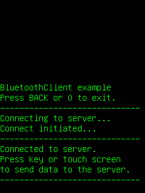
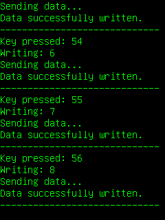

This example application acts as a Bluetooth client. It is designed to work with our BluetoothServer example application.
|  |  |
| Start up/connection | Sending data |
This example is included in the MoSync SDK installation in the /examples folder. For information on importing the examples into your workspace, see Importing the Examples.
To use this example application with our BluetoothServer application, you will need two Bluetooth capable devices. Make sure that Bluetooth is turned on on both devices and that the devices are paired before running the server and the client applications.
The file Common.h from the BluetoothServer project is included in the client. It is assumed that both project folders BluetoothClient and BluetoothServer are located in the same directory. Common.h contains variables and functions shared between the BluetoothServer and BluetoothClient projects (including the service UUID), and contains a full description of how to use the projects together.
Note: Before you build and run this application, you need to enter the address of the BluetoothServer device in sServerAddress in Client.cpp. When you start up our BluetoothServer application on a device it will show you this address.
Note that when making your own projects that use Bluetooth, you need to enable Bluetooth for your project under Properties > MoSync Project > Application Permissions.
When this application starts up on a device or in the MoRE emulator it will attempt to connect to the server identified by sServerAddress. If the connection is sucessfully established you will see the message "Connected to server". (If you are having trouble getting Bluetooth clients to connect to Bluetooth servers, you are not alone! Check out our dedicated forum topic Bluetooth Ache for some helpful advice.)
The zero or back key exits the application, but pressing other keys on the keypad or touching the screen will send the data to the Bluetooth server application: the keycode and the data sent are echoed on the client's screen.